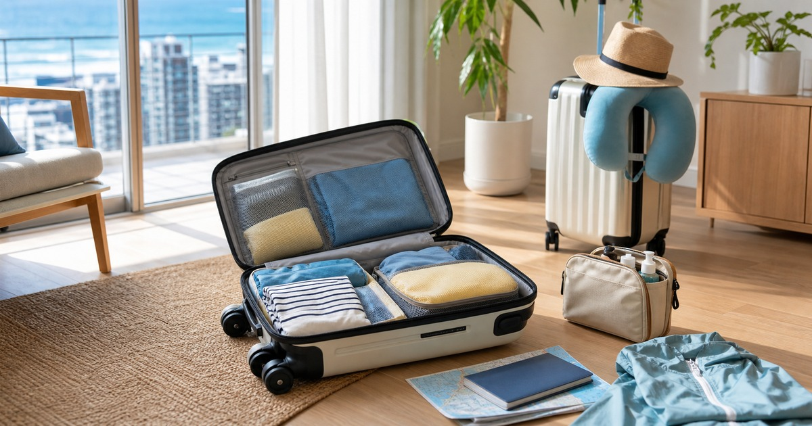

出國前先整理箱包系統：前開式行李箱、登機箱與旅行收納
旅行箱包先按旅程長度、拿取頻率與交通方式分層，再決定前開式行李箱、登機箱和收納袋。

出國前一晚的混亂，通常不是行李箱不夠大，而是每件東西都不知道該放哪裡。護照、充電器、外套、盥洗包和備用衣物，如果沒有按拿取頻率分層，再大的箱子也會變得難找。
先決定旅程型態，再決定箱子
兩天出差、五天城市旅行和親子家庭旅行，適合的箱包系統完全不同。出差要重視筆電、文件和快速拿取；城市旅行要重視登機與移動；家庭旅行則要把共用品、替換衣物和臨時備品分開。
前開式行李箱的優點是拿取方便，但也要看飯店空間、箱體厚度與開合方式；登機箱則要確認航空尺寸與重量限制，不能只看照片比例。
- 出差：外層放文件、電源與盥洗包。
- 城市旅行：保留購物與換洗彈性。
- 家庭旅行：共用品和個人物品分層。
把高頻物放在不用翻箱的位置
旅途中最常找的是證件、充電器、耳機、外套、藥品或小盥洗包。這些東西不應該埋在箱底，而是要放在前開層、隨身包或固定收納袋。
如果你常在機場、車站或飯店大廳開箱，高頻物的位置會比箱子容量更重要。找得到、拿得快、放得回去，就是好用的箱包系統。
- 證件與票券獨立放。
- 電源線集中一袋。
- 當天外套不要壓在最底層。
Elite 嚴選
收納袋不是越多越好
收納袋的任務是分層，不是把行李切得更碎。衣物、盥洗、電子配件、備用藥品和髒衣袋各一類就好；如果每一小件都有袋子，反而更難記得在哪裡。
ENDUO 恩多箱包、DW 優選家官方直營店、城市漫遊旅行用品專賣與戶外趣，可以分別從前開箱、登機箱、旅行小物與戶外用品方向延伸。比較時請確認尺寸、重量、材質與保固資訊。
回程空間要事先留出來
旅行最常出錯的，是去程裝得剛剛好，回程卻多了伴手禮、文件、衣物濕氣和未洗衣物。打包時保留一個可壓縮區，比多帶一個大袋子更實際。
若旅程包含戶外活動，自駕或露營，請把雨具、備用袋和容易髒的物品獨立處理，避免回程污染乾淨衣物。
- 去程只裝八分滿。
- 髒衣袋和備用袋先放進箱內。
- 液體與易碎品獨立保護。
出發前確認規定，不靠記憶
航空公司尺寸、重量、液體與電池規定可能調整，尤其是廉航、轉機和不同艙等。出發前請回到航空公司與官方公告確認，不要只靠過去經驗。
箱包系統的目標，是讓你在路上少翻找、少補買、少慌張。當每一類物品都有固定位置，旅行的第一天會輕很多。
同主題品牌參考
FAQ
這篇文章會直接推薦單一品牌嗎？
不會。本文會把不同品牌放回生活情境中比較，協助讀者判斷使用頻率、收納位置與商品頁資訊，而不是把單一品牌寫成唯一答案。
商品價格、活動或庫存可以以本文為準嗎？
不可以。價格、活動、庫存、規格與配送條件都可能變動，請以下單前看到的商品頁或店家頁公告為準。
如果內容涉及健康、寵物或照護用品，應該怎麼判斷？
請把本文視為一般生活採買整理，不要當成醫療、營養、獸醫或個人化建議；若有健康、照護或寵物狀況，應先詢問合格專業人員。
下一步建議
先按旅程長度和拿取頻率規劃箱包，再挑前開箱、登機箱與旅行收納用品。
重要警語
航空尺寸、重量與攜帶限制可能變動，實際出行前請以航空公司與官方公告為準。
本文含品牌／商品導購連結；若你透過部分商品連結前往選購，Elite Fashion 可能取得合作收益。本文仍以編輯判斷與使用情境整理為主，價格、規格、活動與庫存請以商品頁公告為準。